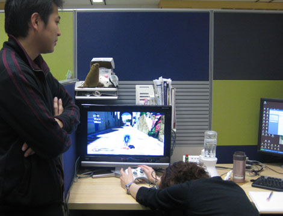
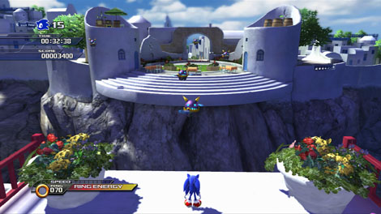
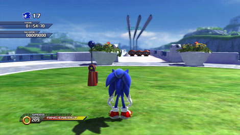
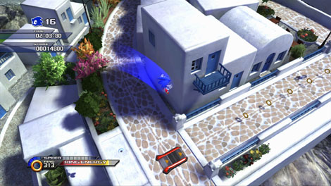
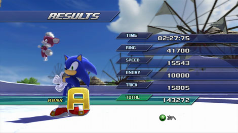

『タイムアタック企画第1回☆ ホワイトアイランドAct２！』
2009年03月17日
こんにちは！ マツバラです！
さて皆さま、こちらの企画を
覚えていますでしょうか！
『SWA』スタッフによる昼ステージのタイムアタック企画、
まず1人目はヨシノ！
おなじみアポトスのホワイトアイランドAct2に挑戦しています！
難易度は低めでも奥の深いステージ。
ヨシノはどこまでタイムを縮められるでしょうか！
……
あれっ、どうしたのヨシノ！
テンション低いね！
延々と練習しすぎて
指が痛い。
頑張って！
『SWA』スタッフとして胸をはるために！
ホワイトアイランドAct2、3分30秒。
これが私の結果ってことで……
いいわけないでしょ！
うっうっうっ……
岡田 ： どう、ヨシノ、頑張ってる？
もう無理です……

心が折れたヨシノと、温かく見守る岡田。
岡田はホワイトアイランドAct2制作者。
岡田 ： 仕方ないなあ……
少し手伝ってあげようか？
おおっ。
では早速、岡田さんのタイムアタック結果を
ヨシノのものとして公開させてください。
言うと思った！
絶対ダメ！
ちぇっ。
岡田 ： 嘘はダメだよ(笑)
タイムを縮めるポイントを
いくつか教えてあげるからね。
岡田さん、やさしーい！
岡田 ： まず、地上でブーストした状態で小ジャンプすると、
すごい勢いで飛び出せるのは知ってる？
そうするとかなりジャンプの飛距離が伸びるから……

岡田 ： ここなんかは、
空中の敵にホーミングアタックをしなくても
向こう岸に行けるようになるよ。
すごーい！
それは私も知らなかったです！
よし。
早速やってみよう。
岡田 ： それから……

岡田 ：この、3つめのチェックポイント付近。
ああ、奥に見えるバネを使って
グラインドレールに乗るところですな。
岡田 ： ここ、実は、スピードがついた状態で
バネを避けて勢いよく飛び出すと
直接グラインドレールに着地できるよ。
えっ、バネを避ける？
……本当だ！ 横からすり抜けられる！
岡田 ： バネでジャンプしてグラインドレールに着地するより
直接飛び乗ったほうが速いんだ。
なんと。
岡田 ： こういう風に、バネとかレインボーリングなどを
あえて避けることで
タイムを縮められる箇所は他にもあるよ。
あ、あるものをそのまま使ってました……。
岡田 ： レインボーリングをくぐるとスコアが上がるから
Sランクを狙うには、使ったほうがいいんだけどね。
…………。
あれ、ヨシノ、どうしたの？
む、難しい……
どれも、できない……
岡田さん。
私にもできるの、教えてください。
岡田 ： えーっと……(笑)
じゃあ、基本の基本。
落下中にストンピングとか。
む。
何の意味が？
岡田 ： 自然落下するより
ストンピングで急降下したほうが
早く着地できるぶん、タイムが縮まるから。

例えば、このタイミングでストンピング！
下にあるダッシュパネルに早くアクセスできる。
おおっ。
これなら私にもできる。
岡田さん。
もっと他。プリーズ。
岡田 ： まあ、普通にやってれば、
2分20秒台には、なると思うから。
がんばってね。
ヒー！
岡田さん、行かないでー！
ほらヨシノ！
練習、練習！
そして、練習の結果……
で、出た……
2分30秒、切った。

ヨシノのベストタイム。
まあ、前回が4分58秒だったこと考えると、
頑張ったよね。
このくらいで許してやるか！！
…………。
さて皆さま、
前座はここまで！
次回からが本番です！
ステージ制作者自らが
登場してくれますよ～！
乞うご期待！
…………。
これだけ頑張って
私は前座か。
日時: 2009年03月17日 20:30 | パーマリンク


 ソニックを愛する、元気な『SWA』2年目プランナー。
ソニックを愛する、元気な『SWA』2年目プランナー。 マイペースな『SWA』2年目プランナー。
マイペースな『SWA』2年目プランナー。
 ご意見・ご要望はこちら
ご意見・ご要望はこちら RSS
RSS